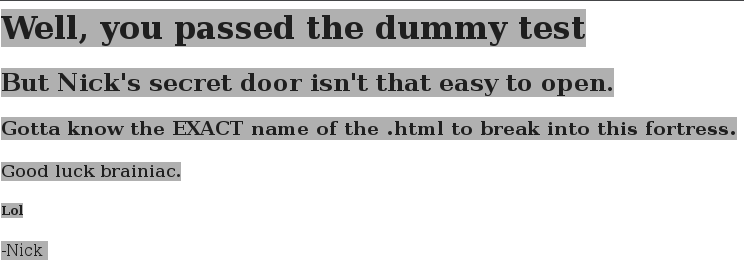

This is a TommyBoy1 challenge from vulnhub.com. You can obtain the virtual
machine from: here
'''
The primary objective is to restore a backup copy of the homepage to Callahan
Auto's server. However, to consider the box fully pwned, you'll need to collect
5 flags strewn about the system, and use the data inside them to unlock one
final message.
'''
At first scanning the target with nmap:
Then version detection:
Strange thing... at first port 65534 was open now it's closed. I launch
wireshark and start snooping the trafic to realize what happened. We have 22, 80
and 8008 open so lets focus on that for now.
At index page on the website on port 80 in the source we found this comments:

From the comments we conclude:
-
Nick is the administrator of the site
-
Richard is someone who wants admin access
-
The backup of the site is in Big Tom's home folder
-
Tom share important information on the company blog
-
The company blog is at /prehistoricforest
The company blog is WP site. And one of the blog posts is password protected.
The answer from the first post in the blog give as clue about /richard directory
in which we found img file 'shockedrichard'. I tried to unlock the password
protected post with 'richard', 'shockedrichard' etc. didn't work. This is what
we found in the picture:
Decrypt the hash:
Then unlock the second post in which we found important info:
-
Another user Michelle
-
Nick is the IT guy
-
there is backup called callahanbak.bak that you can just rename to
index.html and everything will be good again. (You have to do this under Big Tom’s account via SSH to perform this restore)
-
Big Tom's accontt shoud be found in the userlist (probably it's not called
bigtom)
-
The home folder of Nick can be accesed via FTP, the port is the one we
found at the first scan with nmap (65534). The FTP server goes on/off every
15 minutes.
-
Nick ftp account = nickburns (the password is very easy)
-
Nick didn't have ssh access
From there I decide to try nick ftp account with hydra:

In the ftp dir we found this readme.txt:
- There should be encrypted .zip file in 'NickIzL33yt' contained Big Tom's passwords.
The 'NickIzL33t' is at [target ip]:8008/NickIzL33t but there is nothing there so
lets scan the webserver. I used nikto, nessus and wpscan for that.
This is what we found in the NickIzL33t directory:
And the web page return 403 Forbidden response:
6 hours letter... Lets change the user agent to apple's.
We shoud use apple User-Agents. We should think about this earlier, after all
only "Nick and Steve Jobs can see this content"
When we open the NickIzL33t dropbox dir with apple UA this is the result:

It's time to bruteforce... Dirbuster give me some errors, because of url
encoding so I switch to wfuzz with:
wfuzz -c -v -w ~/Downloads/Wordlists/rockyou_max9len.txt -H "User-Agent:Mozilla/5.0 (iPhone; U; CPU iPhone OS 4_0 like Mac OS X; en-us) AppleWebKit/532.9 (KHTML, like Gecko) Version/4.0.5 Mobile/8A293 Safari/6531.22.7" --hc 404 http://10.0.0.139:8008/NickIzL33t/FUZZ.html
We found the dropbox files:
Third flag found: Flag data: TinyHead
It's time to create custom dictonary with the hints from hint.txt
-
start with 'bev'
-
upper case char
-
two numbers
-
two lowercase chars
-
one symbol
-
1995
bev[A-Z][1-9][1-9][a-z][a-z][symbol]1955
This is the script i use to generate the wordlist based on hints founed in the hint.txt:
import exrex
output_file='dict.lst'
regex='bev[A-Z][0-9]{2}[a-z]{2}[`~!@#$%^&*()_+}{|":;.,/?><\']1995'
generated_strings=list(exrex.generate(regex))
with open(output_file, 'w') as f:
for str in generated_strings:
f.write(str + '\n')
This is the content of the zip password protected file:
-
The password for Callahan Auto Server isn't complete, there is more numbers at
the end
-
Probably information about these numbers is in the company blog
At this point we can generate another password list with fatguyinalittlecoat and
numbers at the end and try to bruteforce the ssh account on the target. But we
could also look at the blog more carfully. Lets enumerate users on the company
blog:
It's look like the account which we need is 'tom' so lets bruteforce the
wordpress login of Big Tom.
wpscan --username tom --wordlist ~/Downloads/Wordlists/rockyou.txt --url http://10.0.0.139/prehistoricforest/
On the wordpress panel this is what we found:
It's look like the password is fatguyinalittlecoat1938!!
Lets try to ssh with bigtommysenior:fatguyinalittlecoat1938!!
wot wot !!! :)
Four flag found: Flag data: EditButton
In the flag four we obtained important information:
But...but...where's flag 5?
I'll make it easy on you. It's in the root of this server at /5.txt